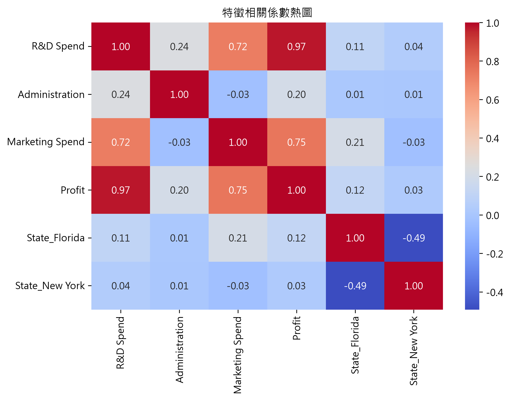
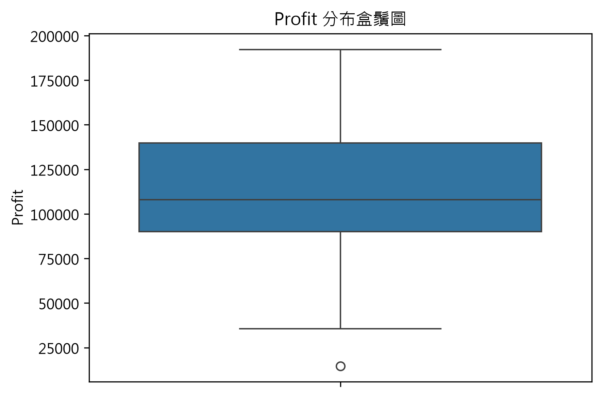
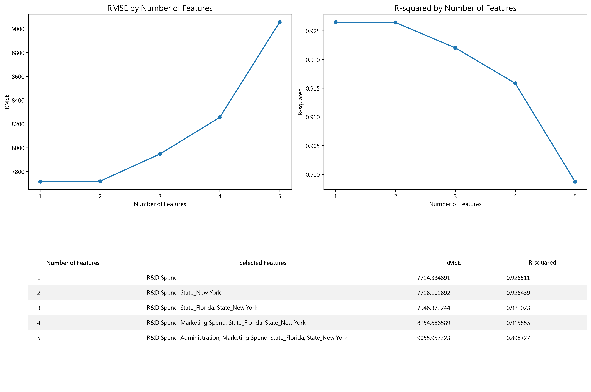

資料來源：50_Startups.csv
共 50 筆觀測、5 個欄位（R&D Spend, Administration, Marketing Spend, State, Profit）。其中 State 已透過 one‑hot 編碼轉為 3 個虛擬變數。
顯示各特徵之間的線性相關程度。

Profit（目標變數）的分布概況。


| 特徵數量 | 選取特徵 | RMSE | R‑squared |
|---|---|---|---|
| 1 | ["R&D Spend"] | 7714.334891 | 0.926511 |
| 2 | ["R&D Spend", "State_New York"] | 7718.101892 | 0.926439 |
| 3 | ["R&D Spend", "State_Florida", "State_New York"] | 7946.372244 | 0.922023 |
| 4 | ["R&D Spend", "Marketing Spend", "State_Florida", "State_New York"] | 8254.686589 | 0.915855 |
| 5 | ["R&D Spend", "Administration", "Marketing Spend", "State_Florida", "State_New York"] | 9055.957323 | 0.898727 |